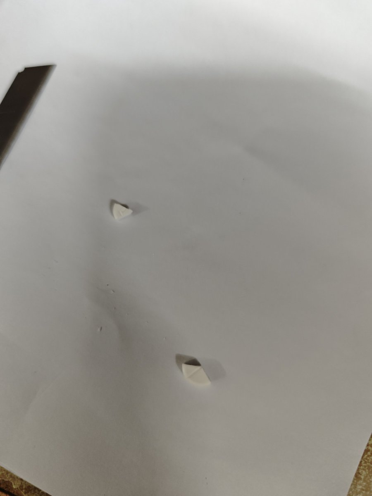

洛铃🦊Magic Caster
@LolingVerse
@Lyx1877174 @realMlgmXyysd @Yg_Xyn

洛铃🦊Magic Caster
@LolingVerse
色普龙切割教程：
对于 50mg 的土色，其一面刻有logo，一面刻有刻痕。
将 50mg 色普龙片 放置在 干净的平面上，例如使用 a4 纸 垫的平整桌面。 https://t.co/mbEKhlWXQi
theObviousNewBirth🍥🏳️🌈🏳️⚧️🇺🇦🇹🇼🇺🇸
@Lyx1877174
@realMlgmXyysd @Yg_Xyn 没有啊 我是七天里面两天是12.5mg CPA一片就是50mg切成4片就是12.5啊 再小就碎了！